Next: Tail distributions
Up: Measuring the magnitude of
Previous: The Klass-Nowicki Inequality
The Lévy Property
Let  be a sequence of independent random variables. We will say
that satisfies the Lévy property with constants
be a sequence of independent random variables. We will say
that satisfies the Lévy property with constants  and
and  if whenever
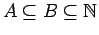, with
if whenever
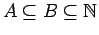, with  and
and  finite, then for
finite, then for 
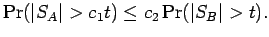
The casual reader should beware that this property has nothing to do
with Lévy processes.
The sequence has the strong Lévy property with
constants
and if for all 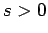 the sequence
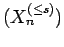 has
the Lévy property with constants and .
Here are examples of sequences with the strong Lévy property. (It
may be easily seen that in all these cases it is sufficient to
show that
they have the Lévy property.)
- Positive sequences,
with constants
 and .
and .
- Sequences of symmetric random variables
with constants and
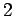. This ``reflection property'' plays a major role in results
attributed to Lévy, hence the name of the property.
- Sequences of identically distributed random variables. This was shown
independently by Montgomery-Smith (1993) with constants
 and 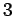,
and by Lata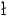a (1993) with constants 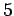 and 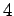, or 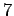 and
.
and 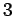,
and by Lata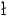a (1993) with constants 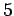 and 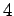, or 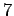 and
.
We see that sequences with the Lévy property
satisfy a maximal inequality.
Proposition 4.1
Let
be a sequence of independent random satisfying the Lévy
property with constants and . Then for all
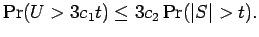
Thus
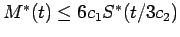.
Proof:
The first statement is an immediate corollary of the
following result known as Lévy-Ottaviani
inequality:
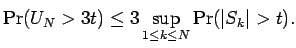
(Billingsley (1995, Theorem 22.5, p. 288) attributes
this result to Etemadi (1985) who proved it with constants 4 in both
places, but the same proof gives constants 3; see, for example,
Billingsley.
However the first named author learned this result from
Kwapien in 1980.)
The second statement follows from the first, since 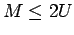.
We end with a lemma that lists some elementary properties.
Part (i)
of the lemma might be thought of as a kind of reduced
comparison principle.
Lemma 4.2
Let be a sequence of random variables
satisfying the strong Lévy property.
- There exist positive constants and , depending
only upon the Lévy constants of , such that if 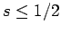
and
 , then
, then
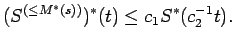
- There exist positive constants
and , depending only upon the
strong Lévy constants of , such that if
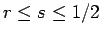,
and if
, then
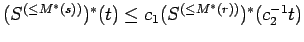.
- If
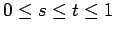, then
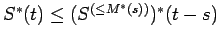, and
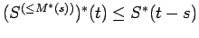. In particular,
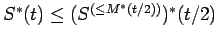, and
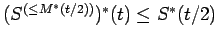.
- For
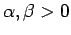, we have
that
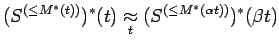
where the
constants of approximation depend only upon  ,
,  and the strong
Lévy constants of .
and the strong
Lévy constants of .
- We have that
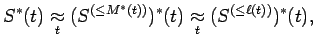
where
the constants of approximation depend only upon the strong Lévy
constants of .
Proof:
Let us start with part (i).
For each set
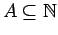, define the event
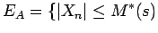 if and only if 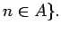
Note that the whole probability space is the disjoint union of these
events. Also
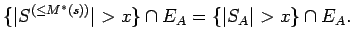
Furthermore, by independence, we see that
| |
|
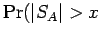 and 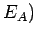 |
|
| |
|
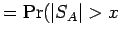 and 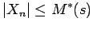 for 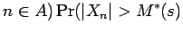 for 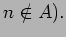 |
|
Hence
| |
|
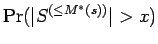 |
|
| |
|
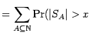 and for for 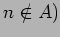 |
|
| |
|
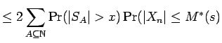 for for |
|
| |
|
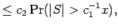 |
|
where in the first inequality we have used the fact that
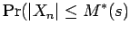 for 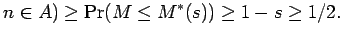
Part (ii) follows by applying
part (i) to
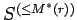.
Part (iii) follows from the observation that
Hence, if
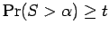, then
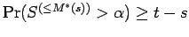, and conversely, if
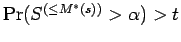 then
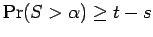.
To show
part (iv),
we may suppose without loss of generality that 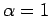 and 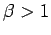.
Clearly
, so we need
only show an opposite inequality. From part (ii), there are
positive
constants and , depending only upon the strong Lévy constants of
, such that for
where
.
Part (v) follows easily by combining
part (iii), part (iv),
and Proposition 2.1.
Next: Tail distributions
Up: Measuring the magnitude of
Previous: The Klass-Nowicki Inequality
Stephen Montgomery-Smith
2002-10-30